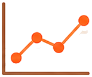
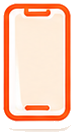
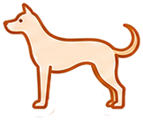
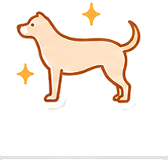
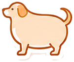

今日の体重を記録
毎週同じ時間に計測すると変化を比較しやすくなります。

体重管理グラフ（kg）記録一覧
まだ記録がありません
サマリー・改善目標
記録を追加するとサマリーと理想体重までの差が表示されます。
このツールでできること
登録不要・無料で、毎日の体重管理に必要な機能がそろっています。

使い方かんたん！3ステップ
入力するだけ。あとは自動でグラフと診断を表示します。
体重を入力する
ペット種別と体重を入力して「記録」ボタンを押すだけ。理想体重も設定できます。
BCSを確認する
入力した体重から肥満度（BCS）を自動判定。痩せ・適正・肥満を色で表示します。
記録の変化を見る
記録を続けるとグラフ化。理想体重までの差や増減を一目で確認できます。
BCS（ボディコンディションスコア）とは？
体脂肪の状態を1〜9段階で評価する指標。理想は4〜5です。



1〜3 痩せ気味
肋骨や腰骨が浮き出て見える状態。食事量や健康状態の見直しが必要です。
4〜5 理想・適正
肋骨に触れやすく、上から見てくびれがある健康的な体型です。
6〜9 太りすぎ
肋骨が触れにくくくびれが消失。ダイエットと獣医師相談をおすすめします。
こんな方におすすめ
愛犬・愛猫の健康を毎日見守りたいすべての飼い主さんへ。
獣医師に体重相談したい方
記録データを持参すれば、定期健診でより的確なアドバイスを受けられます。
多頭飼いの体重管理
犬・猫それぞれの記録を分けて管理。複数ペットの推移をまとめて把握。
ダイエット効果を見たい方
理想体重を設定して達成度と増減を可視化。モチベーション維持に。
シニアペットの健康管理
体重減少の早期発見に。小さな変化も記録で見逃しません。
初めてペットを迎えた方
成長期の体重変化を記録。適正体重の目安づくりに役立ちます。
治療・療養中のケア
回復状況を数値で記録。通院時の経過説明がスムーズになります。
安心して使える理由
獣医師監修ガイド
BCSや体重管理の正しい知識を同梱。
登録不要ですぐ使える
会員登録・インストール不要。ブラウザで完結。
BCSの詳しい解説
1〜9段階の判定基準をわかりやすく解説。
データはブラウザ内に保存
外部送信なし。プライバシーを保護します。
よくある質問
Q: 記録データはどこに保存されますか？
A: ご使用のブラウザのローカルストレージに保存されます。外部サーバーへは送信されず、他のデバイスとは共有されません。
Q: ブラウザを閉じても記録は残りますか？
A: はい、同じブラウザを使う限りデータは保持されます。
Q: BCS（ボディコンディションスコア）とは何ですか？
A: 体脂肪の状態を1〜9段階で評価する指標です。理想は4〜5。肋骨に触れやすく、くびれがある状態が健康的です。
Q: どのくらいの頻度で記録するのが良いですか？
A: 週1回程度が理想です。急激な増減（1週間で体重の5%以上）があれば獣医師に相談してください。
Q: 記録を削除するにはどうすればいいですか？
A: 各記録の「削除」ボタン、またはブラウザのサイトデータをクリアすることで削除できます。
Q: 複数のペットを管理できますか？
A: はい。ペット種別（犬／猫）ごとに理想体重を設定でき、それぞれの記録を分けて管理できます。
今日から、うちの子の健康管理をはじめよう
無料で記録してみる🔗 関連サービス
ペットの体重管理と健康維持の基礎知識
ペットの肥満は人間と同様に、糖尿病・関節疾患・心臓病等の健康問題に直結します。定期的な体重測定と適切な食事管理が、ペットの長生きと健康に欠かせません。犬や猫は自分で体調を訴えられないため、体重の変化が病気の早期発見につながることがあります。このツールでは体重をグラフで可視化し、肥満度（BCS）を自動判定。理想体重からのズレをすぐに確認でき、獣医師への相談時にも記録データを持参することで的確なアドバイスを受けやすくなります。
- 犬の肥満割合：日本の飼い犬の約30〜40%が肥満または過体重（推計）
- 猫の肥満：室内猫は運動不足になりやすく、去勢・避妊後は太りやすい
- BCS：1〜9段階で体型を評価する方法（4〜5が理想）
- 記録頻度：週1回程度が理想。急激な増減は獣医師に相談を
ペット飼育の費用・実態データ（2024〜2025年）
| 項目 | データ | 出典 |
|---|---|---|
| 犬・猫の飼育頭数（推計） | 犬：約684万頭・猫：約883万頭（2023年） | ペットフード協会「全国犬猫飼育実態調査」2023年 |
| 犬の年間飼育費用（平均） | 約34万円 | ペットフード協会 2023年 |
| 猫の年間飼育費用（平均） | 約16万円 | ペットフード協会 2023年 |
⚠️ ご利用時の注意事項
- 本ツールの結果はあくまで参考情報です。ペットの健康管理は必ず獣医師にご相談ください
- 急激な体重変化（増加・減少）は健康問題のサインである場合があります
- ペットの異変（食欲不振・嘔吐・元気消失等）が続く場合は速やかに動物病院を受診してください
ℹ️ このツールについて
「ペット体重記録・肥満診断」はAppADayCreatorが提供する無料Webツールです。会員登録・アプリインストール不要で、ブラウザからすぐにご利用いただけます。すべての処理はブラウザ内で完結するため、入力した情報が外部サーバーに送信されることはなく、プライバシーも保護されます。
⚠️ 本ツールの結果は参考情報です。専門的判断は資格を持つ専門家にご相談ください。